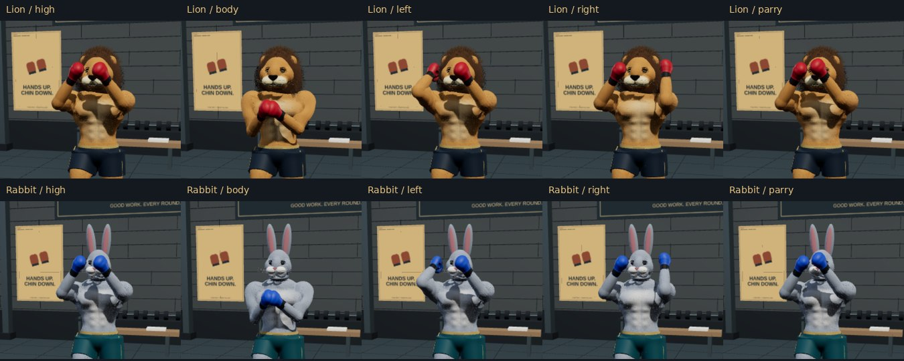
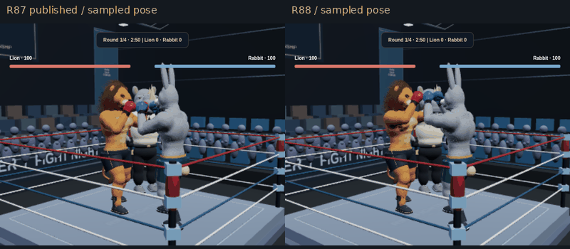
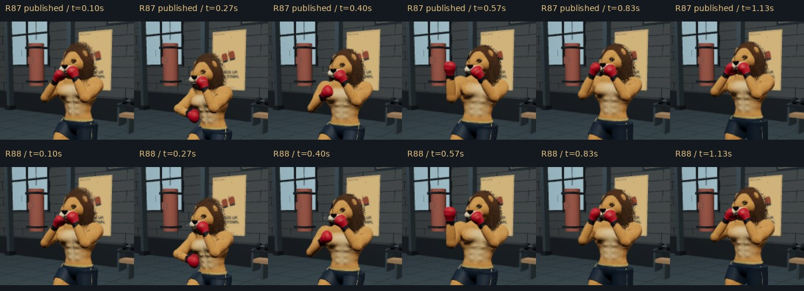
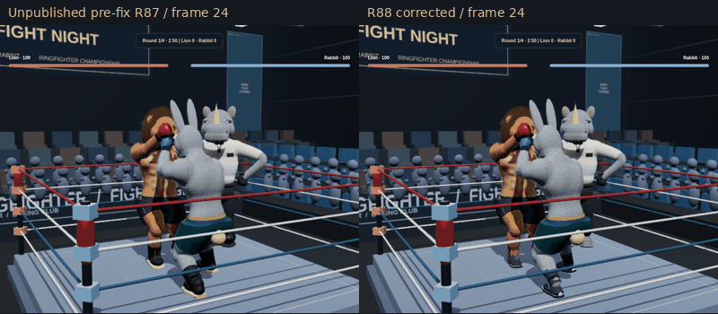
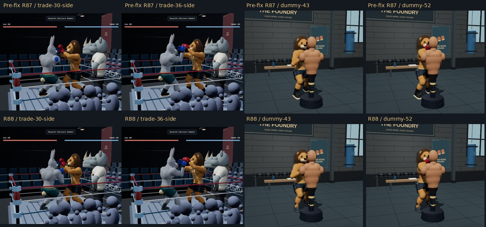
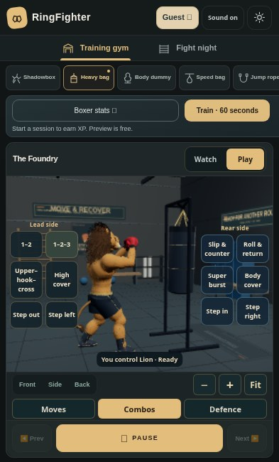
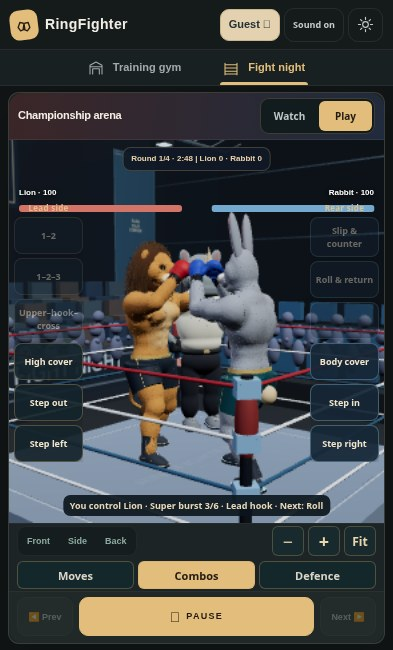

Actual app renders. Authored motion with contact constraints, not motion capture or a completed realistic character sculpt. Physical-phone performance remains unverified. Exact validation record · Methods and commands

Five defensive covers on both species; current app geometry; existing R87 footwear is retained.

R87 published baseline versus R88: sampled ring movement, jab and braking. Playback is not a frame-rate benchmark.

Matched solo uppercut poses, R87 versus R88.

Contact recovery: unpublished failing R87 development candidate versus corrected R88. This is a bug-fix comparison, not a comparison against the published release.

Opposite-angle arm recovery and dummy uppercut close review.

Native Play controls in a phone-sized browser viewport.

One press starts a combination while the opponent remains independent.